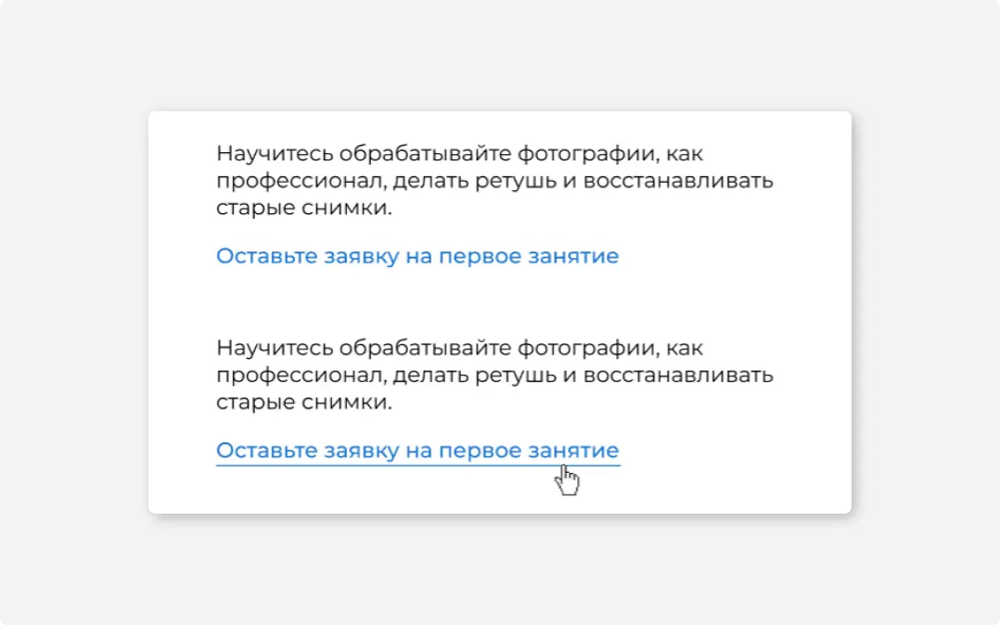
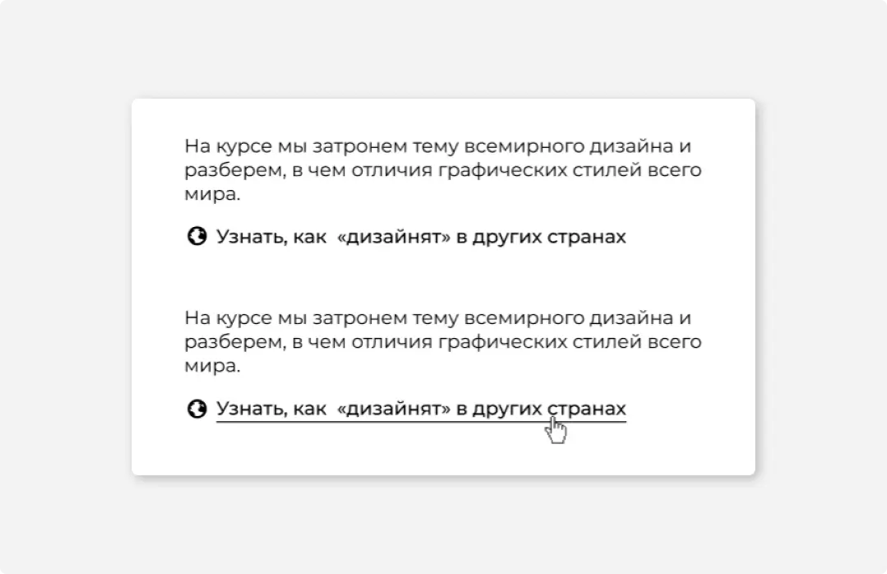
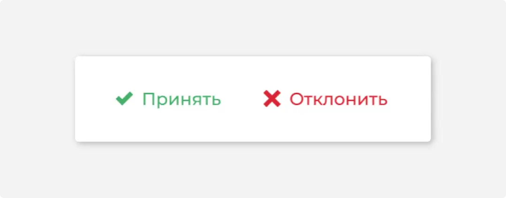
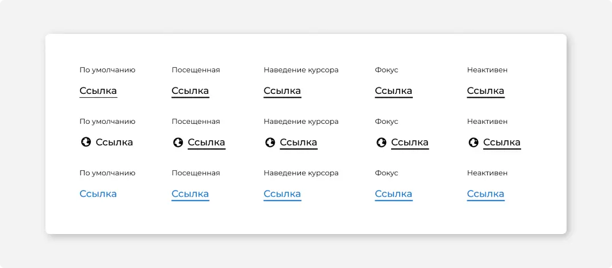

Размеры
Заблокирована
С иконкой
#1
Назначение
Ссылка связывает веб-страницы или выступает как более легкий аналог кнопки.
#2
Описание работы
Если подчеркивание создает излишний визуальный шум, от него можно отказаться, убедившись, что ссылка опознается как интерактивный элемент. Например, выделить её смысловым цветом, или цветом продукта. Однако если вы отказались от подчёркивания в дефолтном состоянии, подчеркивайте ссылки при наведении и фокусе. Это помогает пользователю убедиться, что ссылка нажимается.
Иконки в ссылках также помогают идентифицировать её как интерактивный элемент. Иконка также реагирует на нажатие, но при наведении не подчеркивается.
#3
Цвет
Ссылки вместе с подчеркиванием окрашиваются в дефолтный черный цвет контролов.
При необходимости ссылки допускается выделять синим. Пользователи однозначно воспринимают синий текст, как ссылку. Так же ссылки допускается выделять фирменным цветом продукта.
Допустимо использовать красный для необратимых или негативных по смыслу действий, а зеленый для действий с положительной окраской. Оформлять ссылки таким образом уместно, если они стоят рядом. Так как это ссылки для действий, используйте их вместе с иконками.
Если нужно показать пользователю, что он уже посещал эту страницу, посещенную ссылку можно отметить более темным цветом или более светлым цветом в случае ссылок черного цвета.
Применяйте это в новостях, справке, документации и не применяйте навигации и действиях.
#4
Состояние
Курсор мыши при наведении на ссылку меняется на «указатель», подчёркивание становится становится толще (2px).
